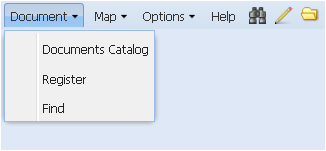

Меню Documents
Команды меню Documents (Документы) позволяют регистрировать новые документы, осуществлять простой и расширенный поиск документов и получать доступ к каталогу документов. Команды открываются в ниспадающем списке при нажатии левой кнопкой мыши на название меню или на пиктограмму . Меню содержит три команды – Register, Find, Documents catalog.
